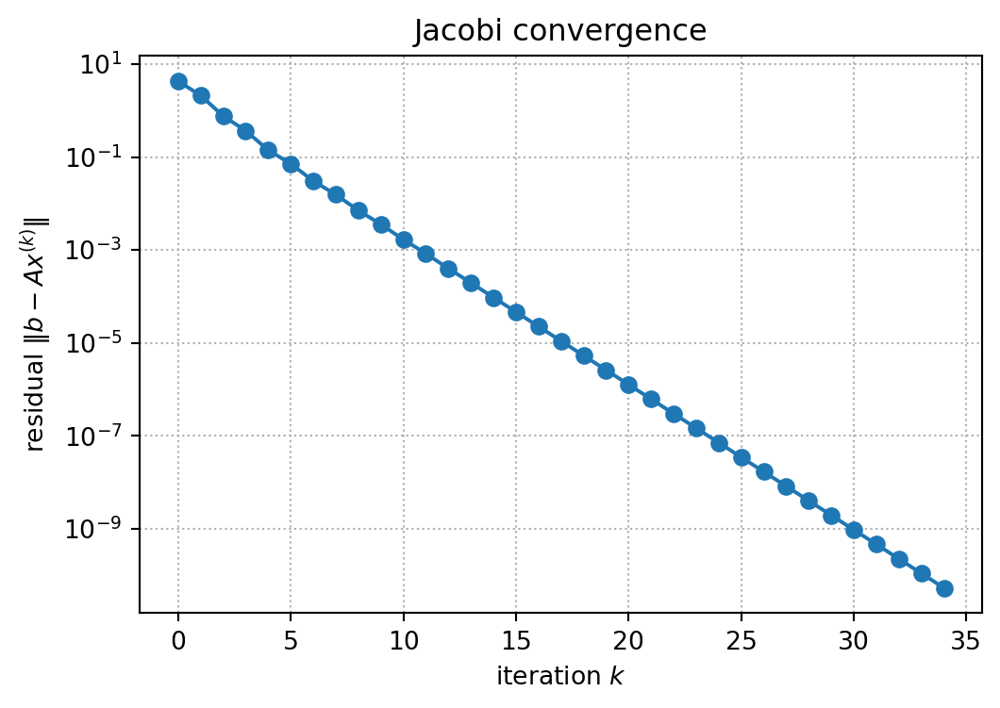

import numpy as np
from numpy import linalg as LA
def perturbation_demo(A, rng, eps=1e-8):
n = A.shape[0]
# Set the exact solution by hand:
# x = (1, 1, ..., 1)^T.
# Then define b from Ax = b, so we know the true answer in advance.
x_true = np.ones(n)
b = A @ x_true
# Add a very small relative perturbation to the right-hand side b.
# This models the situation where data or rounding errors slightly
# change the system from Ax = b to Ax = b + db.
db = eps * LA.norm(b) * rng.normal(size=n)
x_hat = LA.solve(A, b + db)
# rel_b measures the relative size of the perturbation in b:
# ||db|| / ||b||.
# rel_x measures the resulting relative error in the solution:
# ||x_hat - x_true|| / ||x_true||.
rel_b = LA.norm(db) / LA.norm(b)
rel_x = LA.norm(x_hat - x_true) / LA.norm(x_true)
return LA.cond(A), rel_b, rel_x, x_hat
# These matrices are 10x10 examples prepared for this experiment.
# They have very different condition numbers, so the same small
# perturbation in b produces very different errors in x.
matrices = {
"A1": np.loadtxt("data/A1.txt", delimiter=","),
"A2": np.loadtxt("data/A2.txt", delimiter=","),
"A3": np.loadtxt("data/A3.txt", delimiter=","),
}
rng = np.random.default_rng(2026)
np.set_printoptions(precision=3, suppress=False)
# Display the true solution first. The surprising point is that
# the computed solution can be far from this vector even though the
# right-hand side perturbation is tiny.
print("true solution x =", np.ones(10))
print()
for name, A in matrices.items():
cond_A, rel_b, rel_x, x_hat = perturbation_demo(A, rng)
print(f"{name}: cond(A)={cond_A:10.2e}, "
f"rel_b={rel_b:10.2e}, "
f"relative error in x={rel_x:10.2e}")
print("computed x =", x_hat)
print()Lectures 5–6 — Linear Systems and Iterative Methods
Handout: Foundations of and Exercises in Numerical Analysis
TipHow to use this handout — Evolving Study Notes with an AI Tutor
This handout is the shared main material for Lectures 5 and 6. The companion slides (5th.html and 6th.html) are only for class logistics and assignment instructions.
Like the previous handouts, this file is designed to grow with you. Whenever a line confuses you, ask the AI tutor and insert a Q&A block following AI_TUTOR.md.
For Exercise 5.0 or 6.0, copy this handout into the corresponding assignment repository and add your own Q&A blocks there.
Roadmap
This handout is split across two lectures:
| Session | Main topics |
|---|---|
| Lecture 5 | linear systems, conditioning, and an introduction to stationary iterative methods (Jacobi and Gauss-Seidel) |
| Lecture 6 | convergence analysis of stationary iterations, symmetric positive definite matrices, conjugate gradient method, and preconditioning |
1 Systems of Linear Equations
2 Direct and Iterative Methods
3 Conditioning of Linear Systems
Let \(A\) be nonsingular. The condition number of \(A\) with respect to a matrix norm is
\[ \operatorname{cond}(A) = \|A\|\,\|A^{-1}\|. \]
Because \(I=AA^{-1}\),
\[ 1=\|I\|=\|AA^{-1}\|\leq \|A\|\,\|A^{-1}\| =\operatorname{cond}(A), \]
so \(\operatorname{cond}(A)\geq 1\). The value depends on the norm being used, such as \(\ell^1\), \(\ell^2\), or \(\ell^\infty\).
TipDefinition: singular values
For a matrix \(A\in\mathbb{R}^{n\times n}\), the singular values \(\sigma_1\geq \sigma_2\geq \cdots \geq \sigma_n\geq 0\) are the nonnegative square roots of the eigenvalues of \(A^T A\):
\[ \sigma_i=\sqrt{\lambda_i(A^T A)}, \qquad i=1,2,\ldots,n. \]
Equivalently, they are the diagonal entries of \(\Sigma\) in the singular value decomposition
\[ A=U\Sigma V^T, \]
where \(U,V\) are orthogonal and \(\Sigma=\operatorname{diag}(\sigma_1,\ldots,\sigma_n)\).
The largest and smallest singular values are denoted
\[ \sigma_{\max}(A)=\sigma_1, \qquad \sigma_{\min}(A)=\sigma_n. \]
For symmetric positive definite \(A\), the singular values coincide with the eigenvalues.
NoteRemark: 2-norm condition number
For the 2-norm, the condition number can be written using singular values:
\[ \operatorname{cond}_2(A) = \|A\|_2\,\|A^{-1}\|_2 = \frac{\sigma_{\max}(A)}{\sigma_{\min}(A)}, \]
For the linear system \(Ax=b\), suppose \(b\) is perturbed to \(b+\Delta b\), and the solution changes from \(x\) to \(x+\Delta x\):
\[ A(x+\Delta x)=b+\Delta b. \]
Then
\[ A\Delta x=\Delta b, \qquad \Delta x=A^{-1}\Delta b. \]
Using matrix norms,
\[ \|\Delta x\| \leq \|A^{-1}\|\,\|\Delta b\|. \]
Also, since \(b=Ax\),
\[ \|b\|\leq \|A\|\,\|x\|. \]
Combining these estimates gives
\[ \frac{\|\Delta x\|}{\|x\|} \leq \operatorname{cond}(A) \frac{\|\Delta b\|}{\|b\|}. \]
A large condition number means that a small relative perturbation in \(b\) can cause a large relative perturbation in the solution.
NoteWhat the following code does
For each test matrix \(A\), we first choose the exact solution
\[ x_* = (1,1,\ldots,1)^T. \]
Then we define the right-hand side by
\[ b = Ax_*, \]
so the exact answer is known in advance. Next, we solve the perturbed system
\[ A\widehat{x} = b + \Delta b, \qquad \frac{\|\Delta b\|}{\|b\|}\approx 10^{-8}. \]
Finally, we compare the relative perturbation in \(b\) with the relative error in the computed solution:
\[ \texttt{rel\_b} = \frac{\|\Delta b\|}{\|b\|}, \qquad \texttt{rel\_x} = \frac{\|\widehat{x}-x_*\|}{\|x_*\|}. \]
The surprising point is that \(\widehat{x}\) can be far from \((1,1,\ldots,1)^T\) even when \(\Delta b\) is tiny.
TipClick to reveal the output
true solution x = [1. 1. 1. 1. 1. 1. 1. 1. 1. 1.]
A1: cond(A)= 4.49e+01, rel_b= 2.65e-08, relative error in x= 3.29e-07
computed x = [1. 1. 1. 1. 1. 1. 1. 1. 1. 1.]
A2: cond(A)= 1.00e+10, rel_b= 1.89e-08, relative error in x= 8.54e-01
computed x = [ 0.929 1.747 -0.353 1.01 2.143 1.479 0.505 0.36 -0.551 1.556]
A3: cond(A)= 3.59e+16, rel_b= 2.89e-08, relative error in x= 2.60e+09
computed x = [-7.878e+09 -2.330e+09 3.680e+08 2.750e+08 -4.145e+07 -1.111e+08
-1.231e+08 -1.021e+08 -3.704e+07 -7.111e+06]
4 Matrix Splitting
For stationary iterative methods, write
\[ A = D+L+U, \]
where
- \(D\) is the diagonal part of \(A\),
- \(L\) is the strictly lower triangular part of \(A\),
- \(U\) is the strictly upper triangular part of \(A\).
Then
\[ Ax=b \]
becomes
\[ (D+L+U)x=b. \]
Different rearrangements of this equation lead to different iterative methods.
In the next two methods, the update will have the form
\[ x^{(k+1)} = g(x^{(k)}), \]
which is called a fixed-point iteration. Here, \(g\) is an affine map of the form \(g(x)=Mx+c\).
5 Jacobi Method
The Jacobi method rearranges
\[ Dx=-(L+U)x+b. \]
Starting from an initial guess \(x^{(0)}\), define
\[ x^{(k+1)} = D^{-1}\{b-(L+U)x^{(k)}\}. \]
Componentwise, this is
\[ x_i^{(k+1)} = \frac{1}{a_{ii}} \left( b_i-\sum_{j\ne i}a_{ij}x_j^{(k)} \right). \]
All components of the new vector are computed from the old vector.
6 Gauss-Seidel Method
The Gauss-Seidel method rearranges
\[ (D+L)x=-Ux+b. \]
Starting from \(x^{(0)}\), define
\[ x^{(k+1)} = (D+L)^{-1}(b-Ux^{(k)}). \]
Componentwise,
\[ x_i^{(k+1)} = \frac{1}{a_{ii}} \left( b_i -\sum_{j<i}a_{ij}x_j^{(k+1)} -\sum_{j>i}a_{ij}x_j^{(k)} \right). \]
The newest available values are used immediately.
7 Stopping Criterion
For a small tolerance \(\varepsilon>0\), a stationary iteration must be stopped in finite time. Two common criteria are based on the size of the update and the size of the residual.
NoteStopping criterion 1: relative update
Stop when successive approximations change little:
\[ \frac{\|x^{(k+1)}-x^{(k)}\|} {\|x^{(k)}\|} <\varepsilon. \]
This is easy to compute, but it can sometimes stop before the equation \(Ax=b\) is solved accurately enough.
NoteStopping criterion 2: relative residual
Stop when the residual is small compared with the right-hand side:
\[ \frac{\|Ax^{(k)}-b\|} {\|b\|} <\varepsilon. \]
This is more reliable, but it costs more because we must compute the residual \(Ax^{(k)}-b\).
8 Jacobi Implementation
import numpy as np
from numpy import linalg as LAdef jacobi(A, b, x0=None, tol=1e-10, max_iter=500):
A = np.asarray(A, dtype=float)
b = np.asarray(b, dtype=float)
n = len(b)
x = np.zeros(n) if x0 is None else np.asarray(x0, dtype=float).copy()
D = np.diag(A)
R = A - np.diagflat(D)
residuals = []
for k in range(max_iter):
x_new = (b - R @ x) / D
residual = LA.norm(b - A @ x_new)
residuals.append(residual)
if residual < tol:
return x_new, k + 1, np.array(residuals)
x = x_new
return x, max_iter, np.array(residuals)
import matplotlib.pyplot as plt
A_demo = np.array([
[10.0, -1.0, 2.0],
[-2.0, 10.0, -3.0],
[ 1.0, -5.0, 10.0],
])
x_true = np.ones(3)
b_demo = A_demo @ x_true
x_j, it_j, res_j = jacobi(A_demo, b_demo, tol=1e-10)
print("Jacobi solution :", x_j)
print("iterations :", it_j)
print("error vs true x :", LA.norm(x_j - x_true))
print("\nConvergence history (selected iterations)")
print(f"{'k':>4} | {'||b - A x_k||':>16}")
print("-" * 25)
sample = sorted(set([0, 1, 2, 5, 10, 20, len(res_j) - 1]))
for k in sample:
if 0 <= k < len(res_j):
print(f"{k:4d} | {res_j[k]:16.3e}")
plt.figure(figsize=(6, 4))
plt.semilogy(res_j, marker="o")
plt.xlabel("iteration $k$")
plt.ylabel(r"residual $\|b - A x^{(k)}\|$")
plt.title("Jacobi convergence")
plt.grid(True, which="both", linestyle=":")
plt.show()
TipClick to reveal the output
Jacobi solution : [1. 1. 1.]
iterations : 35
error vs true x : 3.609399953221805e-12
Convergence history (selected iterations)
k | ||b - A x_k||
-------------------------
0 | 4.295e+00
1 | 2.092e+00
2 | 7.625e-01
5 | 7.120e-02
10 | 1.677e-03
20 | 1.269e-06
34 | 5.368e-11
9 To Be Announced
The remaining topics will be covered in the next lecture.
NoteTBA
Sections from Iteration Matrices and Convergence onward are temporarily hidden for today’s class. They will be restored in the full version of this handout.